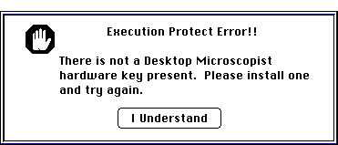

Desktop Microscopist Alerts
As with any complex program, Desktop Microscopist has a number of alert
messages to warn the user of potential problems. The following is a list
of some and a display of other alert messages, their meanings and potential
corrective action.
- Copy Protection Alert

Desktop Microscopist requires a hardware key which protects the software
from unauthorized duplication. For this hardware key to work properly, the
following actionsmust occur.
- The hardware key must be connected to one of the computer's ADB (mouse/keyboard)
ports. If,difficulties persist, please call Virtual Laboratories or see
Installation.
Memory Errors
Desktop Microscopist has a number of built-in methods for checking proper
handling of memory during use of the program. If any of the following alert
messages appear, they indicate a potential memory problem. Frequently, the
program will run with no further troubles. However, if possible, make a
note of what activities preceded the appearance of the alert and the type
of alert which was activated and fax Virtual Laboratories with this information
- it will help us to improve our product.
- Trying to Lock an Invalid Handle. This message indicates
a serious problem. Shut down Desktop Microscopist and try to duplicate the
occurrence. Call Virtual Laboratories.
- Trying to lock a Handle that is locked already. Non-critical
error. Note occurrence.
- Attempt to lock Handle Failed. Probably not critical. Note
occurrence.
- Trying to Unlock an Invalid Handle. This message indicates
a serious problem. Shut down Desktop Microscopist and try to duplicate the
occurrence. Call Virtual Laboratories.
- Handle is already Unlocked. Not serious but note occurrence.
- Handle Unlock failed. May be critical, but probably not serious.
Note occurrence.
- The total number of Locks does not match the total number of unlocks.
Not Critical, probably will not effect performance.
- Trying to dispose of a Invalid Handle. This message indicates
a serious problem. Shut down Desktop Microscopist and try to duplicate the
occurrence. Call Virtual Laboratories.
- Trying to Dispose of a Locked Handle. This message indicates
a serious problem. Shut down Desktop Microscopist and try to duplicate the
occurrence. Call Virtual Laboratories.
- Trying to Dispose of an invalid Ptr. This message indicates
a serious problem. Shut down Desktop Microscopist and try to duplicate the
occurrence. Call Virtual Laboratories.
- Not enough room to allocate the new Ptr. Indicates fragmented
memory space. Close Desktop Microscopist and resume operations. Hopefully,
Desktop Microscopist will close gracefully.
- Not enough room to allocate the new Handle. Indicates fragmented
memory space. Close Desktop Microscopist and resume operations. Hopefully,
Desktop Microscopist will close gracefully.
- Not enough room to allocate the temporary Handle. Indication
that program is running out of room. Desktop Microscopist is designed to
take advantage of available system memory. To free up blocks of new memory,
close all open windows.
- Object Allocation Failed. Indicates lack of additional space.
May indicate coding problems. Close open windows and try again.
- Trying to dispose of an invalid class. Indicates potential
problem. Note occurrence.
- Trying to dispose of a locked class. Typically, not a serious
coding problem. Note occurrence.
- There are objects which have not been de-allocated. Seen
when quitting application. Indicates memory is not being de-allocated properly.
Note occurrence and try to remember activities while in the program.
- Uh Oh....Some pointers were left hanging. Seen when quitting
application. Indicates memory is not being de-allocated properly. Note occurrence
and try to remember activities while in the program.
- Trying to Re-size an invalid Ptr. Serious problem. Typically,
program will crash soon after activation of this alert. Note occurrence.
- Trying to Re-Size an invalid handle. Serious problem. Typically,
program will crash soon after activation of this alert. Note occurrence.
- JT_PopUp...Resource ID and Menu ID do not Match! Will cause
confusion in execution of pop-up menu. Please note the object and dialog
box in use.
- Uh Oh....While trying to condense a handle it was discovered
that the condensed size would be BIGGER than the current size....Memory
may be trashed. Confusion by programmers. Note occurrence. Call Virtual
Laboratories.
- Unable to down-size the handle...This should never occur.
- Trying to Down-size an invalid Handle. This message indicates
a serious problem. Shut down Desktop Microscopist and try to duplicate the
occurrence. Call Virtual Laboratories.
- Trying to allocate a zero length Handle. Should never occur.
Could be seen when opening a new object. Is a problem and will cause rapid
crashing.
- Trying to allocate a zero length Pointer. Should never occur.
Could be seen when opening a new object. Is a problem and will cause rapid
crashing.
- Verification reveals that an Object has been trashed. If
seen, please call Virtual Laboratories. Know the object and the function
which caused the activation of this message.
- The tested object is not valid. If seen, please call Virtual
Laboratories. Know the object and the function which caused the activation
of this message.
Author: J.ames T. Stanley
 Desktop Manual:File
Errors
Desktop Manual:File
Errors
Distributed By: Virtual Labs
Last Updated:June 26,1996